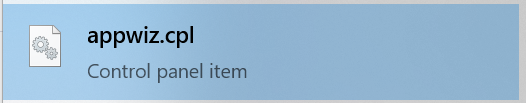

Malware removal
This guide lists help to fix common issues with browsers, along with removing malware from Windows, MacOS, Android, and GNU/Linux systems.
Last updated: 12/9/2023
Warning: This is a work in progress!
Things not to do
- Do not use "cleaner" programs to clear browser cache/cookies. These programs may cause problems with your browser. Use your browser settings to clear cookies and cache.
- Stay away from scam or low quality software, such as SpyHunter[1], TotalAV, ScanGuard, PCProtect, CleanMyMac[2][3], MacKeeper[4][5][6][7], and CCleaner.
Easy solutions
My security software keeps detecting an infection in Chrome
- If you log into a Google account in Chrome, it will sync your settings, browser extensions, history, and other data. This may be convenient for some, but may cause unwanted settings and browser extensions to keep being restored from the cloud. In order to address this issue, clear all synced data.
Remove spam notifications
Malicious websites can send you spammy notifications, such as fake warnings about malware:


Revoke the ability to send notifications for all but sites which need it and which you trust:
If that does not work or you want to be sure, clear your browser cache and site data, which should remove the code which is causing these issues.
Clear browser cache and cookies
Warning: This will sign you out of websites
Change search engine and homepage/new tab
Some malware will only change your homepage/new tab or search engine, and will not prevent you from changing it back.
Homepage/new tab:
Search engine:
If your browser says the homepage or search engine is managed by an extension, follow the instructions below to uninstall that extension. If that does not work, try resetting browser sync and removing policies (Windows only).
Uninstall a specific extension
If a specific extension is causing problems, you can uninstall it:
Can not remove an extension:
If you are unsure what extensions to uninstall, see if you have any of the extensions listed below installed, and if so, try uninstalling them. You also can try disabling your extensions one-by-one and seeing which one is causing the problem.
Known malware browser extensions
If installed, I recommend you remove these. However, this is not an exhaustive list.
- "Browsing Overview by Securify" Changes your search engine to
search[.]mysecurify[.]com, which redirects to Bing.
In general, it is best to use as few browser extensions as possible. Also, only use browser extensions you can trust.
Rules for browser extensions:
- Any website which tells you to install a browser extension in order to prove you are human, watch a video, continue to another website, remove a "virus" or malware, or some similar reason is fake. Just close the tab and never visit it again.
- Read carefully though any permission requests, and only give browser extensions access to what they need to function. Think to your self: does this align with this extension's purpose? A content blocker needs to access all websites to block ads, trackers, etc. A weather extension doesn't, though it may need your location.
- Is the browser extension open source?
- Just because something is open source does not mean it is private, secure, high quality, or stable. It doesn't mean experts have reviewed it's code.
- It also does not mean the extension will stay open source forever.
- However, it is a good start.
- I would recommend you avoid browser extensions which are not open source.
- Browser extension authors often sell their extensions to shady companies or outright malware authors: https://krebsonsecurity.com/2020/03/the-case-for-limiting-your-browser-extensions/
- Shady companies will pay browser extension developers to include malware in their extensions: https://vitonsky.net/blog/2023/09/01/malware-in-browser-extensions/ (archived) (from https://github.com/hagezi/dns-blocklists/discussions/1515)
- I would recommend against using McAfee Web Advisor, at least at the moment. Back in 2022, I found a vulnerability in it which allowed any website to detect if is installed. That vulnerability still exists and is being used by attackers[8]
General advice on troubleshooting
Remove a theme
Themes should not be able to do anything bad, and thus are highly unlikely to be malware. However, should you want to remove them, here is how:
Reset browser sync
Many browsers now can sync data between devices. This feature sadly has the side effect of causing unwanted browser changes to reappear, even after being removed. Be aware that clearing your sync data probably will cause some synced data to be lost. Be sure to save any important data (i.e. passwords) securely outside your browser just in case.
Disable session restore
Session restore (while helpful) can automatically reopen problematic pages.
Remove a proxy
A proxy is another computer or software which sits between you and the website you are accessing. There are many legitimate uses for proxies. However, if you do not use one, you may want to check if one has been set by malware:
Reset the HOSTs file
GNU/Linux, Windows, MacOS, and many other operating systems have a special file called the HOSTs file which lets you tell your computer where to find specific websites. This also means you can tell your computer that a website doesn't exist. Many people use this to block ads, trackers, or malware. However, malware can use this to block websites hosting security software.
After resetting your HOSTs file, reboot your device.
Change your DNS server
Fix problems updating
Fix hijacked shortcuts (Windows)
If your browser keeps opening unwanted websites, it could be that the shortcuts you use to open your browser have been hijacked. Below are three methods to fix this.
Method 1
This method will delete and recreate the taskbar shortcut.
- Right click on your browser's icon in your taskbar
- Click "Unpin from taskbar":

- Search for your browser in Windows search or open it via another method (i.e. a desktop shortcut)
- Once it opens, right click on it's icon in the taskbar and click "Pin to taskbar":

Method 2
This method will clean any shortcuts in your desktop.
- Right click on the desktop shortcut
- Click "Properties"

- Click the "Target" box and delete everything after the name of the browser and the last double-quote:

- Delete all the selected text. Remember: Do not delete anything before the double-quote and browser name
- Click "Apply"
- If you get this error, click "Continue" and accept the UAC prompt if needed

Method 3
- Open the start menu
- Find your browser
- Right click on it:

- Hover over "More" and click "Open file location":

- Right click on the shortcut (Windows should already select the proper shortcut)

- Click "Properties"
- Click the "Target" box and delete everything after the name of the browser and the last double-quote:
- Delete all the selected text. Remember: Do not delete anything before the double-quote and browser name
- Click "Apply"
- If you get this error, click "Continue" and accept the UAC prompt if needed
Before attempting to remove malware
- Backup your data
- Enable System Restore and create a restore point:
Malware removal guides
Malware removal guide websites
- MalwareTips: https://malwaretips.com/blogs/
- Their guides are all the same.
- They use Hitman Pro, which allows you to scan for free but requires a license the removal feature.
No one malware removal tool can clean a system. I would recommend you run at least three. However, while running too many shouldn't harm your system, it also is unneeded. If your hard drive is failing, avoid running any of these tools as they may push it over the edge.
- Windows:
- Android:
- I have little experience removing malware from Android, and lack an environment to test in. Thus, I do not know what the best security software for Android is.
- Malwarebytes: https://play.google.com/store/apps/details?id=org.malwarebytes.antimalware
- It seems you now need to share payment information and agree to the trial, even to do a free scan
[12]
. Thus, I find it hard to recommend their Android product. The Windows and MacOS versions should still be free.
- GNU/Linux:
- Despite common belief, GNU/Linux systems can be infected with malware. A good portion of the malware is targeted at servers and IOT devices.
- chkrootkit: https://www.chkrootkit.org/
- ClamAV:
- iOS:
- iOS malware is very rare outside targeted attacks
- If you are reading a page on GitHub about how to fix problems with your browser, you probably aren't someone who would be targeted.
- If you are indeed targeted, you should seek help from an expert, not a page on GitHub
- There is no antivirus/antimalware/malware removal tools for iOS, as Apple does not allow apps to have the level of access required. Any application claiming to detect or remove iOS malware is a scam.
- Any message claiming your phone is infected with malware is fake. Any text message or email claiming your phone is infected is a scam.
- This is far beyond the scope of this page and my knowledge
Fix browsers not opening
Hacked account
Do not try to recover a hacked account from an infected device.
Be aware: there are a lot of scammers out there who claim they can recover your account.
Remove browser policies (Windows)
Before doing this, close all browsers. Open regedit and delete these keys:
- Edge (current user):
- HKEY_CURRENT_USER\SOFTWARE\Policies\Microsoft\Edge
- HKEY_CURRENT_USER\SOFTWARE\WOW6432Node\Policies\Microsoft\Edge
- Edge (system) - you will need to run regedit as admin:
- HKEY_LOCAL_MACHINE\SOFTWARE\Policies\Microsoft\Edge
- HKEY_LOCAL_MACHINE\SOFTWARE\WOW6432Node\Policies\Microsoft\Edge
- Chrome (current user):
- HKEY_CURRENT_USER\SOFTWARE\Policies\Google\Chrome
- Chrome (system) - you will need to run regedit as admin:
- HKEY_LOCAL_MACHINE\SOFTWARE\Policies\Google\Chrome
- Chrome policy removal tool:
https://www.stefanvd.net/project/chrome-policy-remover/ (there is also one for MacOS, but I cannot speak to its safety or effectiveness)
- Internet Explorer: HKEY_LOCAL_MACHINE\SOFTWARE\Policies\Microsoft\Internet Explorer
- Firefox: HKEY_LOCAL_MACHINE\SOFTWARE\Policies\Mozilla\Firefox
After doing this, restart your browser
Reset your browser
Reinstall your browser
Uninstall
Repair Microsoft Edge on Windows
- Type appwiz.cpl into the Windows search
- Click on "appwiz.cpl":

- Scroll down until you see Microsoft Edge:

- Click on it, then click "Change":

- Click "repair" and wait

Reinstall
Problems installing
Reset your router
Dealing with aggressive browser malware
Before continuing, try all the prior steps. This is the "nuclear" option. It will remove most/all data, so be sure you have anything (passwords, bookmarks) backed up. I do not have good guides for all browsers.
Reset/reinstall your operating system
Windows
iOS
iOS malware is very rare. Any message telling you your iOS device is infected is a scam.
Security advice
Once you have fixed your issue, it is recommended to take this advice:
Random other privsec advice and information
Password protected archives
Never open a password protected archive. These are a favorite of malware authors, and almost never contain anything legitimate. If someone sends you a password-protected archive, do not open it or anything else in the message. If it is someone you trust, contact them through some other means (texting, Signal, social media), as their account may have been compromised.
Logins and stuff
Passwords
- You have heard all the password security advice many times before. Strong, unique, etc.
- Just use a password manager and Multi Factor Authentication.
- Adding a second password does little to improve security, and is largely security theater. In my opinion, the only way this could add any security is if the second password is stored somewhere else (ie on paper, or memorized). If the service supports MFA, just use MFA. If it doesn't, a second password won't help you. Also, very few services even support this feature (ProtonMail being one of them).
- Do not store your passwords in the iOS password manager. Anyone who can log into your device can access them.
- I would recommend you avoid using LastPass as a password manager. They have shown they can not be trusted with your security:
- Never store your passwords in your browser: